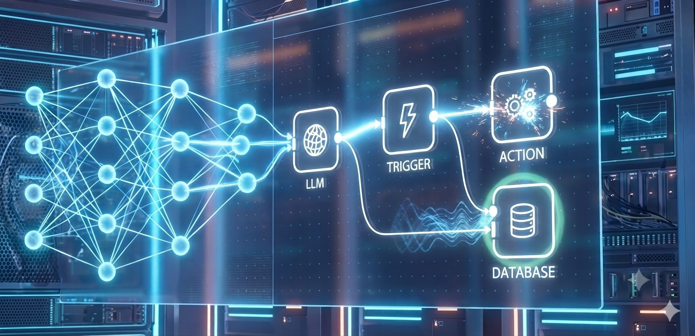

Triggers, logic, and actions built to spec — linking your CRM, database, ticketing tools, and legacy software into one orchestrated, self-running workflow.
Every system, one orchestration layer

Our MCP-server layer gives AI agents a controlled, secure bridge into Salesforce, SAP, ServiceNow, Atlassian, and your own legacy systems — no brittle point-to-point integrations.
Every automation starts as a visual workflow graph — trigger, agent, logic, action — before it ever touches production.


A new lead lands, the agent enriches it, the CRM updates, the team gets pinged — seconds, not days. That's the standard every build has to meet before launch.